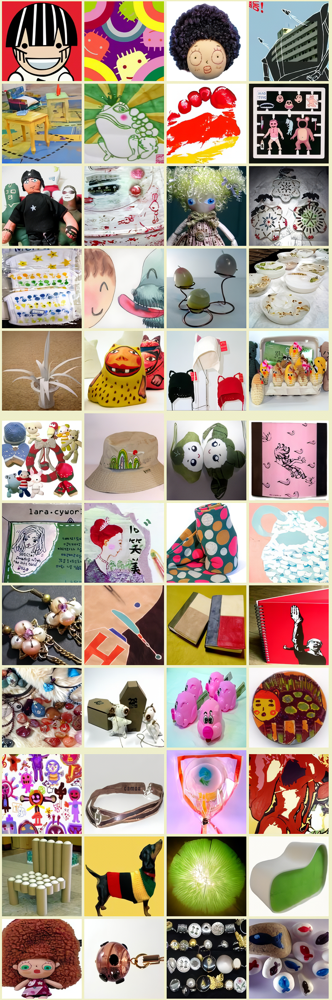
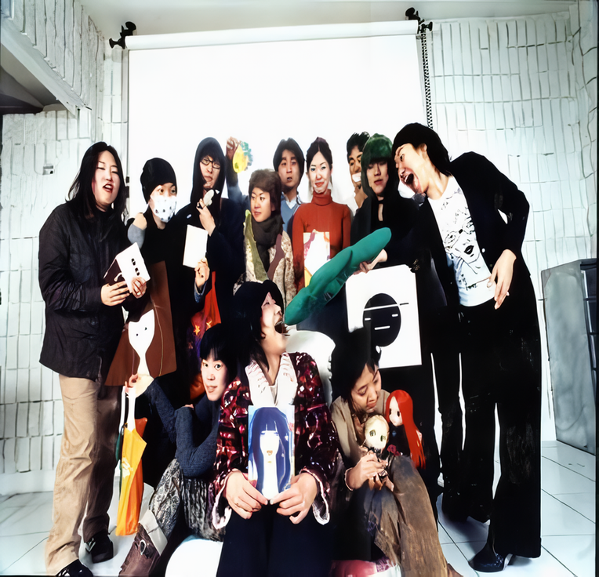

새로운 희망
2003 스톤앤워터 전시지원공모선정 첫번째 전시
2003_0215 ▶ 2003_0315
_waifu2x_art_noise3_scale.png)
오프닝 이벤트_정월 대보름맞이 거리장터, 무지개연날리기
2003_0215_토요일_02:00pm~05:00pm_석수시장(전철 1호선 관악역 도보 10분거리)
참여작가
강영민_고경원_공영미_권재홍_기따_김명미_김명혜_김문정_김미나_김보라
김성민_김수정_김순임_김월식_김은영홍_김정주_김효은_델로스
디자인정글_디타_망고스틴_미미팝_박경미_박경애_박석현_박윤경_박은영
박정운_박주영_박효진_박훈규_방유미_백지현_비즈라니_빨강고양이
빨강고양이엄마_삐까쎄리_생선가게_서의종_세라_세오각시_손성진
손영일_손정은_슈퍼곶감베이비_시시와 구두_신명옥_신지윤_심재연
안지현_알바패밀리_양세연_양은주_예인_우유각소녀_원소희_유혜진
윤영주_이상은_이수은_이연정_이영은_이윤진_이재순_이정민_이정윤
이종훈_이학선_이현우_이호준_임가비_임루비_임소희_임정선_정진_조보경
조윤석_주연실_지따_지명이다_진나영_차화숙_채림맘_최현주_캔디노트
플라이문_해피마_홍보라_홍재우_황희정_1300k_이상 91팀 115명
디자인_박훈규 / 사진_김명미 studio amazos, 홍재우
특별 게스트_이상은 / 일러스트_우유각소녀
책임기획_강영민 (011-9987-1485, misoci@youngmean.com)
supplement space Stone&Water
경기도 안양시 만안구 석수2동 286-15번지
Tel. 031_472_2886
희망이란 이름의 시장
● 홍대 정문앞 놀이터에서 2002년 5월12일 처음으로 열린 후 매주 일요일마다 계속되었습니다.
정감있는 손맛이 느껴지는 수공예품 중심의 예술시장입니다. 일상과 예술의 조화를 추구하는 자생적인 풀뿌리 예술운동입니다.
생활 속에서 창작을 하는 다양한 작가회원들이 참여하는 열린 예술시장입니다.
사연있는 물건에 가치를 부여해 일상을 풍요롭게 하는 재활용 시장입니다.
희망시장은 지역과 시민과 작가를 잇는 네크워크 시장입니다.
_waifu2x_photo_noise3_scale.png)
새로운 희망
● 오래된 재래시장(안양의 석수시장)과 갓 태어난 예술시장(홍대 앞 놀이터의 희망시장)의 만남. / 오래된 재래시장인 석수시장내에 위치한 스톤앤워터는 지난해 2건의 전시, 『리빙 퍼니처』와 『재건축 프로젝트-서울에서 가장 살기좋은 곳 잠실동, 안양의 명당 석수』만으로 미술계에 도발적 화두를 던진 곳이다.
● 홍대 정문 맞은편 놀이터에서 작가와 주민들이 만나는 수공예품 중심의 예술시장으로 시작된 '희망시장'은 2002년 5월12일 처음으로 열린 후 매주 일요일마다 계속 되었다. 생활 속에서 창작을 하는 다양한 작가회원들로 구성된 '희망시장'은 이번 전시에서,
1) 재래시장과 벌이는 물물교환이벤트(작품과 상품간의 네트-워크)
2) 서울과 안양을 잇는 지하철 안에서의 퍼포먼스(서울과 안양이라는 지역간의 네트-워크)
3) 관람객들이 직접 참여하는 방명록전시회(관객참여를 통한 관객과 작가간의 네트-워크)
4) 생활작품 판매(생활과 예술간의 네트-워크)
5) 끊임없이 작품이 추가, 수정, 보완되는 전시공간 연출(박제화된 예술이 아닌 과정으로서의 예술) 등을 통해 자생적 예술시장의 유연성과 확장성을 실험해보고, 자본의 논리에 사라져 가는 지역문화에 '새로운 희망'을 불어넣는 교류의 장을 만들 것이다.

새로운 희망의 구성
● 1.전시출품작품_ 이번 전시에 출품되는 작품들은 모두 희망시장회원 작가들이 이번 전시를 위해 '새롭게' 제작하게 된다. 기존에 희망시장에서 선보였던 작품들이 아닌, 이번 전시에서 선보이는 '특별한' 작품들로, 일부는 전시기간중 전시장에서 직접 제작될 예정이다.
● 2.퍼포먼스_ 지하철공간과 석수시장부근을 위주로 퍼포먼스작품이 발표된다. 팀, 혹은 개인으로 진행될 예정이며, 홍대역에서 관악역까지 지하철 가장행렬을 계획중이다.
● 3.물물교환 프로젝트_ 자신의 작품과 석수시장의 상품이 맞바꿔지는 프로젝트로, 전시기간 내내 개인적으로 진행된다. 이것은 한 달 내내 상인 아줌마 아저씨들과의 교류를 통해 돈, 노동, 혹은 말 한마디로 물품을 교환 혹은 구입하는 프로젝트가 될 것이다.
● 4.방명록 전시회_ 글씨로만 남기는 것이 아니라, 콜라쥬, 사진, 그림, 오브제 등 다양한 방법으로 참여하게 되는 방명록을 마련할 예정인데, 이것은 관객들의 흔적을 남기는 전시장소가 될 것이다.
● 5.아트북_ 전시를 통해 새로운 희망이라는 주제로 아트북이 만들어진다. 다양한 소재와 풍부한 아이디어를 희망시장 멤버들에게 제공받아 만들어질 이 아트북은 또한 희망시장 작품들을 자세하게 소개하고 판매를 돕는 쇼핑카달로그 역할도 하게 될 예정이다.
● 6.전시작품 판매_ 이번 전시에서도 물론 기존 희망시장의 작품들이 판매될 것이다. 가격은 100원에서 300만원까지 다양하다. 100원은 빛자루의 욕망의 캔디, 300만원은 우유각소녀의 드로잉 작품, 학페이지 드로잉
● 이상의 여섯 섹션은 독립되었다기 보다 서로가 자연스럽게 어우러져 진행되며, 기획팀에 의해 다양한 즉흥 연출 또한 가능하다. 이 전시는 젊은 작가들의 생생한 현장인 희망시장을 통해 일상의 미술을 실현하고자 하는 목적을 지니고 있다.

새로운 희망의 부대행사
● 1.정월 대보름 맞이 특별 전시 오프닝 이벤트_ 새로운 희망전의 개막일은 마침 음력 1월 15일(2월 15일 토)이다. 정월 대보름을 맞아 석수시장에서는 거리예술장터가 벌어진다. 희망시장 회원들과 전시장을 찾은 관객들은 물론, 상인들과 지역주민들도 함께 어우러져 무지개 연날리기, 윷놀이, 널뛰기등의 다채로운 행사가 벌어진다. 이번 전시의 기획자 강영민씨(화가)는 "깍쟁이같은 갤러리 전시 오프닝에 질리신 분들은 오셔서 정겹게 즐기세요. 몰론 음식도 대보름 전통음식입니다."라고 말하며 싱긋 웃는다.
● 2.다양한 전시장 밖 행사_ 이번 전시중에는 전시장 뿐만이 아니라, 전시장 밖에서도 다채로운 행사가 벌어진다. 세미나(자생예술시장과 시민네트워크-예술과 일상이 어우러진 삶을 위하여, 3월 1일 토 오후 3시), 7일장(석수시장과 석수동 만안교일대), 미술인과 일반인들을 위한 강좌(수공예 예술운동과 거리 디자인), 미술캠프(밀머리 미술학교, 경기도 여주), 지하철 퍼포먼스(홍대앞역과 관악역), 물물교환프로젝트(석수시장일대)등을 통해 지역주민과 곽객들의 참여를 적극적으로 이끌어낸다.
● 세미나 : 자생예술시장과 시민네트워크(예술과 일상이 어우러진 삶을 위하여)_2003_0301_토요일_03:00pm
● 7일장 : 석수시장, 석수동 만안교주변, 석수 현대아파트앞 2003_0215/0222/0301/0308_매주 토요일 02:00pm~05:00pm 총4회
● 미술인과 일반인들을 위한 강좌 : 수공예 예술운동과 거리 디자인(Low-Tech Design)_2003_0305_수요일_03:00pm_참가비 만원
● 제2회 희망시장 경매 : 새로운 희망전 특별 경매 이벤트,2003_0301_토요일_0530pm / 2003_0315_토요일_07:00pm
● 희망시장캠프 : 2003_0224/0225_1박2일_경기도 여주 밀머리 미술학교_일반인(30여명)_숙식포함 참가비 38,000원
■ rainbowmarket.org